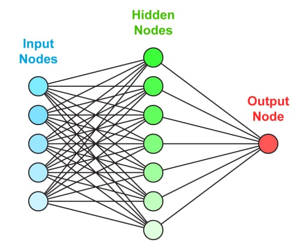

Значение нейронных сетей в логистике
В настоящий момент нейронные сети начинают использоваться во многих областях: медицине, бизнесе, аналитике и других. Самый популярный пример использования нейронных сетей — это распознавание изображений и речи.
Сегодня нейронные сети начинают использоваться в транспортной логистике для анализа и моделирования транспортных потоков и для верного распределения ресурсов (транспорта, пассажиров) на транспортных потоках. Все это используется для оптимизации потоков.
Свою силу нейронные сети черпают, во-первых, из распараллеливания обработки информации и, во-вторых, из способности самообучаться, т.е. создавать обобщения. Под термином обобщение понимается способность получать обоснованный результат на основании данных, которые не встречались в процессе обучения. Эти свойства позволяют нейронным сетям решать сложные (масштабные) задачи, которые на сегодняшний день считаются трудноразрешимыми. Однако на практике при автономной работе нейронные сети не могут обеспечить готовые решения. Их необходимо интегрировать в сложные системы. В частности, комплексную задачу можно разбить на последовательность относительно простых задач, часть из которых может решаться нейронными сетями.
Использование нейронных сетей обеспечивает следующие полезные свойства:
- Нелинейность - искусственные нейроны могут быть линейными и нелинейными. Нейронные сети, построенные из соединений нелинейных нейронов, сами являются нелинейными. Более того, эта нелинейность особого рода, так как она распределена по сети. Нелинейность является важным свойством, особенно если механизм, отвечающий за формирование входного сигнала, тоже является нелинейным.
- Отказоустойчивость - нейронные сети, облаченные в форму электроники, потенциально отказоустойчивы. Это значит, что при неблагоприятных условиях их производительность падает незначительно. Незначительное повреждение структуры никогда не вызывает катастрофических последствий.
- Адаптивность - нейронные сети обладают способностью адаптировать свои синаптические веса к изменениям внешней среды. В частности, сети обученные действовать в определенной среде могут быть легко переучены для работы в условиях незначительных колебаний параметров среды. Более того, для работы в нестационарной среде могут быть созданы нейронные сети, изменяющие синаптические веса в реальном времени. При этом хотелось бы заметить, что адаптивность не всегда ведет к устойчивости, например, адаптивная система с параметрами, быстро изменяющимися во времени, может также быстро реагировать и на посторонние возбуждения, что вызовет потерю производительности.
- Единообразие анализа и проектирования - нейронные сети являются универсальным механизмом обработки информации. Это означает, что одно и то же проектное решение нейронной сети может использоваться во многих предметных областях.
Еще одним важным преимуществом внедрения ИИ и автоматизации в логистической отрасли является тот факт, что эти технологии могут сыграть огромную роль в повышении точности и эффективности обработки цепочки поставок.
С помощью искусственного интеллекта логистические компании могут более эффективно управлять всеми процессами цепочки поставок с помощью упреждающей системы логистики. Основное ожидание клиентов логистических компаний – доставка заказов как можно быстрее. В результате компании используют систему упреждающей логистики, чтобы определить, наблюдается ли увеличение или уменьшение спроса со стороны их клиентов, и скорректировать объем производства в соответствии с тенденцией.Нейронная сеть, внедренная в логистические компании, может привести к улучшению процесса управления и анализа огромных объемов данных. Электронные таблицы и другие устаревшие системы больше не являются эффективным методом управления данными. Таким образом, искусственный интеллект появился, когда информация и данные начали достигать невообразимых количеств в логистической отрасли. Логистические компании генерируют и ежедневно обрабатывают огромные объемы данных. Раньше это было реальной проблемой для сотрудников до внедрения ИИ и автоматизации.
В заключении
Внедрение нейронных сетей и автоматизации в логистических компаниях может поднять производительность на совершенно новый уровень. Индустрия логистики начала внедрять технологии, чтобы улучшить обработку цепочек поставок, повысить удовлетворенность клиентов и создать более безопасную и здоровую рабочую среду для работников.
Внедрение ИИ и автоматизации в сфере логистики может оказать огромное влияние на снижение затрат. Меньшее количество ошибок при принятии решений человеком может привести к снижению затрат для логистических компаний.Системы отслеживания в режиме реального времени, системы упреждающей логистики и возможность управлять большими объемами данных в течение нескольких секунд приводят к более быстрой доставке, меньшему количеству человеческих ошибок, меньшему количеству потерянных или ошибочно доставленных заказов и, очевидно, к повышению удовлетворенности клиентов.